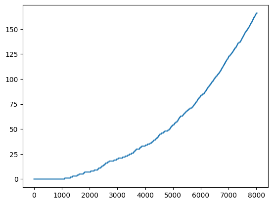

import sys # noqa
import gymnasium as gym # noqa
import numpy as np # noqa
from gymnasium import spaces # noqa
import matplotlib.pyplot as plt # noqaSutton’s Reinforcement Learning Chapter 6: Temporal-Difference Learning
Implementations of algorithms and code solutions for some exercises
class WindyGridWorldEnv(gym.Env):
"""Creates the Windy GridWorld Environment"""
def __init__(
self,
GRID_HEIGHT=7,
GRID_WIDTH=10,
WIND=[0, 0, 0, 1, 1, 1, 2, 2, 1, 0],
START_STATE=(3, 0),
GOAL_STATE=(3, 7),
REWARD=-1,
):
self.grid_height = GRID_HEIGHT
self.grid_width = GRID_WIDTH
self.wind = WIND
self.start_state = START_STATE
self.goal_state = GOAL_STATE
self.reward = REWARD
self.action_space = spaces.Discrete(4)
self.observation_space = spaces.Tuple(
(spaces.Discrete(self.grid_height), spaces.Discrete(self.grid_width))
)
self.actions = {
"U": 0, # up
"R": 1, # right
"D": 2, # down
"L": 3,
} # left
# set up destinations for each action in each state
self.action_destination = np.empty(
(self.grid_height, self.grid_width), dtype=dict
)
for i in range(0, self.grid_height):
for j in range(0, self.grid_width):
destination = dict()
destination[self.actions["U"]] = (max(i - 1 - self.wind[j], 0), j)
destination[self.actions["D"]] = (
max(min(i + 1 - self.wind[j], self.grid_height - 1), 0),
j,
)
destination[self.actions["L"]] = (
max(i - self.wind[j], 0),
max(j - 1, 0),
)
destination[self.actions["R"]] = (
max(i - self.wind[j], 0),
min(j + 1, self.grid_width - 1),
)
self.action_destination[i, j] = destination
self.nA = len(self.actions)
def step(self, action):
"""
Parameters
----------
action : 0 = Up, 1 = Right, 2 = Down, 3 = Left
Returns
-------
ob, reward, episode_over, info : tuple
ob (object) :
Agent current position in the grid.
reward (float) :
Reward is -1 at every step.
episode_over (bool) :
True if the agent reaches the goal, False otherwise.
info (dict) :
Contains no additional information.
"""
assert self.action_space.contains(action)
self.observation = self.action_destination[self.observation][action]
if self.observation == self.goal_state:
return self.observation, -1, True, {}
return self.observation, -1, False, {}
def reset(self):
"""resets the agent position back to the starting position"""
self.observation = self.start_state
return self.observation
def render(self, mode="human", close=False):
"""Renders the environment. Code borrowed and then modified
from
https://github.com/openai/gym/blob/master/gym/envs/toy_text/cliffwalking.py"""
outfile = sys.stdout
nS = self.grid_height * self.grid_width
shape = (self.grid_height, self.grid_width)
outboard = ""
for y in range(-1, self.grid_height + 1):
outline = ""
for x in range(-1, self.grid_width + 1):
position = (y, x)
if self.observation == position:
output = "X"
elif position == self.goal_state:
output = "G"
elif position == self.start_state:
output = "S"
elif x in {-1, self.grid_width} or y in {-1, self.grid_height}:
output = "#"
else:
output = " "
if position[1] == shape[1]:
output += "\n"
outline += output
outboard += outline
outboard += "\n"
outfile.write(outboard)
def seed(self, seed=None):
pass# env = WindyGridWorldEnv()
# env.reset()
# done = False
# while not done:
# env.render()
# action = env.action_space.sample()
# observation, reward, done, info = env.step(action)
# env.render()# Sarsa algorithm
class SARSA:
def __init__(self, env, alpha=0.5, gamma=1, epsilon=0.1):
self.env = env
self.alpha = alpha
self.gamma = gamma
self.epsilon = epsilon
# Sarsa initialization
self.Q = np.zeros((env.grid_height, env.grid_width, env.nA))
def epsilon_greedy(self, state):
if np.random.rand() < self.epsilon:
return self.env.action_space.sample()
else:
return np.argmax(self.Q[state[0], state[1]])
def learn(self, time_steps):
t = 0
episodes = 0
episodes_count = []
while t < time_steps:
observation = self.env.reset()
done = False
action = self.epsilon_greedy(observation)
while not done:
# self.env.render()
# Take action according to epsilon-greedy policy
observation_prime, reward, done, info = self.env.step(action)
action_prime = self.epsilon_greedy(observation_prime)
# We have obtained SARSA, now do SARSA update
self.Q[observation[0], observation[1], action] += self.alpha * (
reward
+ self.gamma
* self.Q[observation_prime[0], observation_prime[1], action_prime]
- self.Q[observation[0], observation[1], action]
)
observation = observation_prime
action = action_prime
t += 1
episodes_count.append(episodes)
episodes += 1
# self.env.render()
return episodes_count# env = WindyGridWorldEnv()
# sarsa = SARSA(env)
# episodes_count = sarsa.learn(time_steps=8000)
# plt.plot(episodes_count)
# q_policy = np.argmax(sarsa.Q, axis=2)
# # Replace 0, 1, 2, 3 with U, R, D, L
# policy_arrows = np.empty((env.grid_height, env.grid_width), dtype=str)
# for i in range(0, env.grid_height):
# for j in range(0, env.grid_width):
# policy_arrows[i, j] = list(env.actions.keys())[q_policy[i, j]]
# print(policy_arrows)[['D' 'R' 'R' 'R' 'R' 'R' 'R' 'R' 'R' 'D']
['R' 'R' 'R' 'R' 'R' 'R' 'R' 'U' 'R' 'D']
['R' 'R' 'R' 'R' 'U' 'L' 'R' 'R' 'U' 'D']
['R' 'R' 'R' 'R' 'R' 'D' 'R' 'U' 'R' 'D']
['R' 'R' 'R' 'R' 'R' 'R' 'U' 'D' 'L' 'L']
['D' 'D' 'R' 'R' 'R' 'U' 'U' 'U' 'L' 'L']
['R' 'R' 'R' 'R' 'U' 'U' 'U' 'U' 'U' 'L']]